Exam prep · AIP-C01
AWS Certified Generative AI Developer - Professional
Verified exam identity (September 2026).This guide targets exactly one exam: the AWS Certified Generative AI Developer – Professional (AIP-C01). If your exam confirmation shows a different code, stop, this material is not for that exam.
| Format | 75 questions: 65 scored + 10 unscored (unscored are unmarked) |
|---|---|
| Time | 180 minutes (about 2.4 min per question) |
| Question types | Multiple choice (one correct) and multiple response (two or more correct, no partial credit) |
| Pass mark | 750 / 1000 scaled |
| Fee | $300 USD |
| Domains | D1 Foundation Model Integration, Data Management & Compliance, 31% · D2 Implementation & Integration, 26% · D3 AI Safety, Security & Governance, 20% · D4 Operational Efficiency & Optimization, 12% · D5 Testing, Validation & Troubleshooting, 11% |
| Who it is for | Professional level: AWS assumes 2+ years building on AWS plus ~1 year of hands-on generative AI work |
Last verified against the official AWS exam guide and independent 2026 candidate sources: September 2026.
Complete study guide: zero-to-one volumes for all five exam domains, a 200-question bank with a 75-question mock exam, a one-volume crash course, and an end-to-end system design guide. Built for a visual learner studying 4+ hours a day. Every volume is self-contained and opens offline.
What this exam is really about
Generative AI on AWS means one thing: calling large AI models through managed AWS services instead of training or hosting them yourself. A foundation model is a large model pre-trained on broad data that you adapt instead of building from scratch. Amazon Bedrock is the managed AWS service that serves foundation models from many providers through one set of APIs, so you never manage GPUs.
Most exam questions are variations on three moves. First, grounding the model in your own data: RAG (retrieval-augmented generation) fetches relevant documents at answer time and the model answers citing them. Second, wiring the model into real applications: agents that take actions through tools, Lambda functions that glue services together, and API Gateway endpoints that face users. Third, guarding it all: guardrails that filter harmful or off-policy content, and IAM policies that control who can call what.
The rest is running it well: picking the right model for the cost, caching repeated work, measuring quality with evals (structured tests of model behavior), and debugging what breaks. With that shape in mind, the vocabulary below reads as names for things you already understand, not jargon.
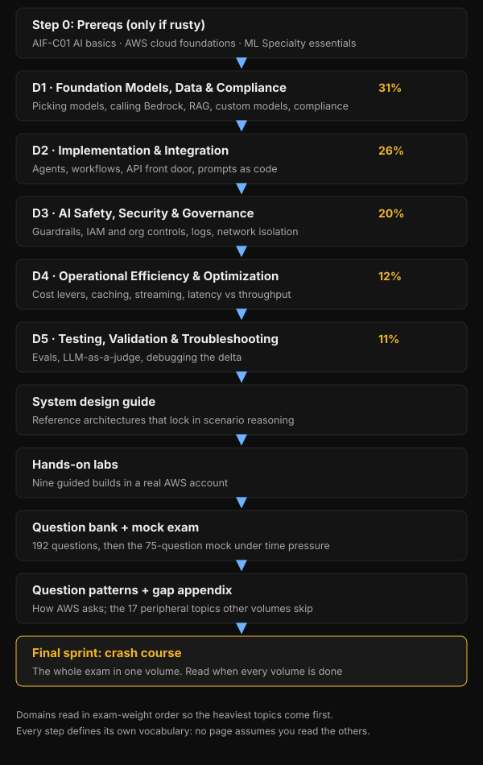
Terms you will meet
One-line definitions for the vocabulary every volume assumes. Each term is taught in depth where it is first used; this is only so nothing on this page reads cold.
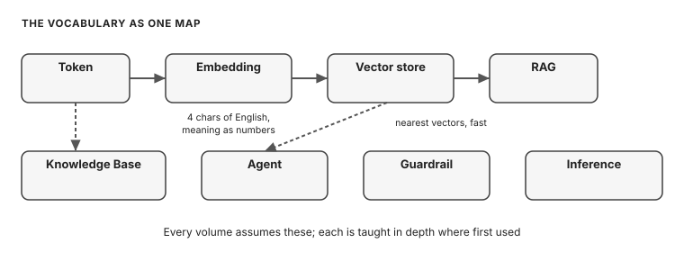
- Foundation model
- A large model pre-trained on broad data, adapted for tasks instead of trained from scratch.
- Amazon Bedrock
- The managed AWS service that serves foundation models from many providers through one set of APIs.
- Token
- The unit the model reads and writes and AWS bills: roughly a word fragment, about 4 characters of English.
- RAG
- Retrieval-augmented generation: look up facts from your documents at answer time so the model can cite them.
- Knowledge Base
- Bedrock's managed RAG service: point it at documents, it handles chunking, embedding, and retrieval.
- Embedding
- A vector of numbers that captures meaning, so similar meanings sit close together.
- Vector store
- A database that holds embeddings and returns the nearest ones to a query, fast.
- Agent
- A model paired with instructions and tools that reasons over a goal and decides which tools to call.
- Guardrail
- A named Bedrock configuration holding safety rules: content filters, denied topics, PII filters, grounding checks.
- Fine-tuning
- Retraining parts of a model on labeled examples to bake in a behavior such as tone or format.
- Inference
- Running a trained model to produce an answer. Almost everything on this exam is inference, not training.
- Latency / throughput
- Latency is how fast one answer comes back; throughput is how many answers you get per unit of time.
- Provisioned Throughput
- Reserved inference capacity bought by the hour for steady production baselines.
- Converse / InvokeModel
- The two Bedrock call APIs: Converse is the unified text-generation API; InvokeModel sends the provider's raw body and is the only path for embeddings.
- IAM
- AWS Identity and Access Management: the policies that decide which identity can do what.
- KMS
- AWS Key Management Service: managed encryption keys for data at rest.
Prerequisites: start here if AWS feels rusty
If you have not touched AWS in a while, read these three first. They teach every prerequisite the professional exam assumes, from zero, with visuals at every step. Skip any you already know cold.
AIF-C01: AWS Certified AI Practitioner crash course
PrereqAI and ML fundamentals, generative AI basics, foundation-model applications, and responsible AI: the vocabulary and concepts AIP-C01 builds on.
AWS cloud foundations
PrereqIAM, S3, EC2, VPC, RDS and Aurora and DynamoDB, Lambda, CloudWatch, and CloudTrail: the core AWS services every AIP-C01 scenario touches.
ML Specialty essentials
PrereqDeeper machine learning for the pro exam: data and feature engineering, training and tuning, evaluation metrics, SageMaker workflows, and MLOps.
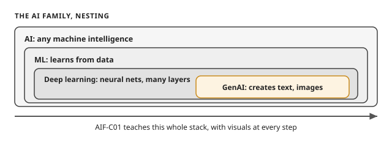
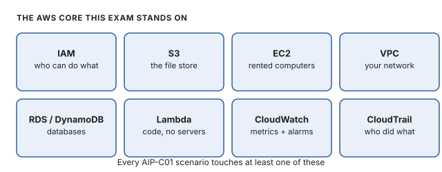
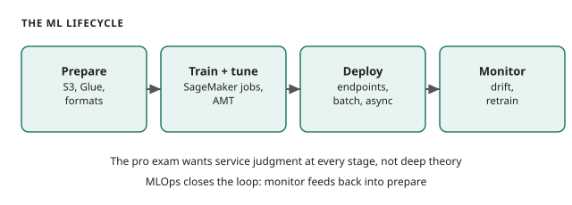
Study volumes (read in order)
The order below is deliberate. The domains run heaviest first, and each volume builds on the vocabulary of the one before it. D1 is the foundation: everything else assumes you know its terms cold.
Foundation Model Integration, Data Management, and Compliance
D1 · 31%The biggest domain. Foundation model catalog on Bedrock, model selection, InvokeModel vs Converse API, inference profiles, prompt routers, Provisioned Throughput, custom models (fine-tuning, continued pre-training, distillation, imports), Knowledge Bases, chunking strategies, embeddings, vector store comparison, RAG end to end, data pipelines, data privacy and compliance.
18 topics · 8 diagrams + 10 ASCII figures · 108 exam-style questions (easy/medium/hard, MC + multiple response)
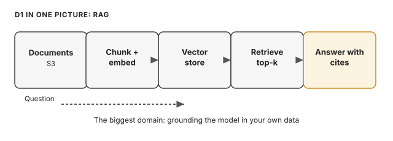
Implementation and Integration
D2 · 26%Bedrock Agents (anatomy, action groups, multi-agent collaboration), Lambda sync/async/streaming patterns, API Gateway in front of Bedrock, Step Functions orchestration, S3 + EventBridge pipelines, Converse tool-use loops, async and batch inference, deployment strategies, enterprise integration, prompt management, SDKs and reliability.
15 topics · 20 figures · 90 exam-style questions + 20-item master trap list
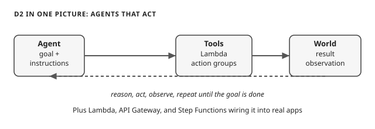
AI Safety, Security, and Governance
D3 · 20%Bedrock Guardrails in full depth (content filters, denied topics, word filters, PII filters, contextual grounding, Automated Reasoning), where Guardrails apply, prompt-injection defenses and their honest limits, IAM, KMS, VPC endpoints, CloudTrail vs invocation logging, governance, responsible AI practices.
10 topics · 8 figures · 60 exam-style questions + cheat sheet + glossary
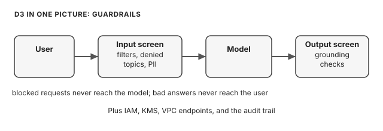
Operational Efficiency and Optimization
D4 · 12%Bedrock pricing models with worked cost math (on-demand, prompt caching, batch inference, Provisioned Throughput, inference profiles), latency vs throughput, streaming, rate limits and throttling, right-sizing and model cascading, CloudWatch metrics, token efficiency, semantic caching, production operations checklist.
13 topics · 14 figures · 78 exam-style questions
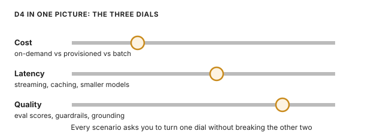
Testing, Validation, and Troubleshooting
D5 · 11%Automatic and human model evaluation, LLM-as-a-judge, BYO datasets and metric selection, RAG evaluation, eval loops, A/B testing, troubleshooting common failures (throttling, guardrail blocks, agent failures, KB sync, embedding mismatches), CloudWatch/CloudTrail debugging, grounding validation, red-teaming, CI/CD eval gates.
12 topics · 12 figures · 36 exam-style questions
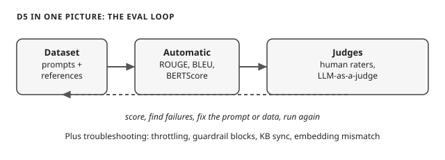
Question Bank + Full Mock Exam
BANK200 scenario-style questions (140 weighted to the exam: D1 44, D2 36, D3 28, D4 17, D5 15, plus 52 bonus professional-bar questions calibrated one notch harder, plus 8 field-research questions built from September 2026 passer reports), easy/medium/hard, single-answer and multiple-response, every answer explaining the correct choice and killing each distractor. Ends with a 75-question mock exam, answer key, and scoring guide.
200 questions · 75-question mock exam · self-test collapsible answers
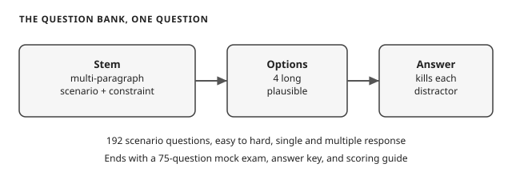
System Design Guide
DESIGNEnd-to-end reference architectures: RAG on Bedrock Knowledge Bases, Bedrock Agents with action groups, sync vs async invocation decision ladder, chatbot reference architecture, cost/latency/quality tradeoff tables, eval loop design, security hardening, and the three decision ladders (grounding, inference pricing, safety).
8 designs · 4 embedded diagrams + 13 ASCII diagrams · 24 questions
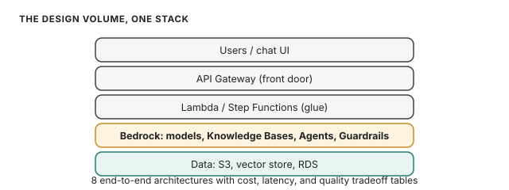
Hands-On Labs (Maarek Course Labs)
LABSNine guided labs mined from the course lab files: Strands agents with custom tools, multi-agent squad routing, AgentCore Runtime deployment, Bedrock Flows from JSON, Lambda as Bedrock front-end, Lambda as an agent action, CI/CD with eval gates, CDK for GenAI infrastructure, and supporting labs (KMS, X-Ray, SQS). Every lab carries the Maarek framing. What it is, why and when, how AWS will ask, traps, and a practice question.
9 labs · architecture diagrams + walkthroughs · 9 practice questions
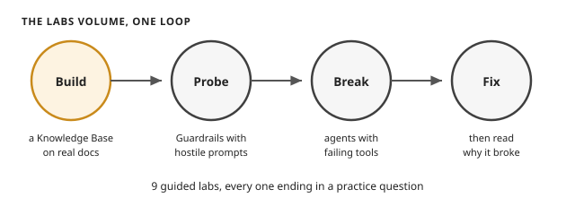
How AWS Asks: Pattern Guide + Original Questions
PATTERNSAnalysis of real exam question patterns (scenario stems, MOST-correct discriminators, multi-response, ordering, matching, anti-pattern traps) across all four verified exam formats, then 81 original questions written in those patterns. Complements the main question bank with different scenarios and angles.
6 patterns + 30-trap catalog · 81 original questions (MC/MR/ordering/matching)
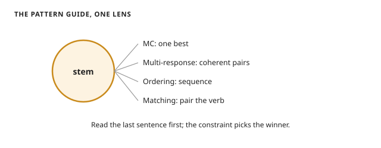
Crash Course: the Whole Exam in One Volume
CRASHOne extremely dense volume for the final sprint. Per-domain rapid-fire sheets (D1 to D5 by weight), "if stem says X, pick Y" decision rules, the must-memorize numbers sheet, all 50 traps in one line each, and 58 rapid-fire self-test questions with one-line answers. Nothing left out, no padding.
5 domain sheets · numbers table · 50 traps · 58 rapid-fire questions
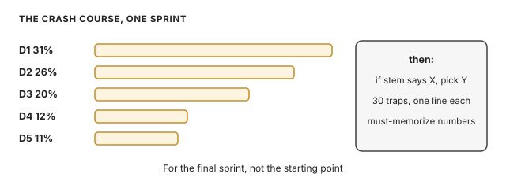
Gap Appendix: Peripheral Services
APPENDIXCompleteness appendix covering every peripheral topic from the three-way coverage check: AppFlow, Transfer Family, QuickSight, Neptune Analytics, Q Apps, Secrets Manager, WAF, CloudFront, Textract, CountTokens, top_k, Evidently, TTFT, vector quantization, SageMaker large-model tuning, EMR. Each with what/why, exam angles, traps, and a practice question.
17 topics · 18 figures · 17 practice questions
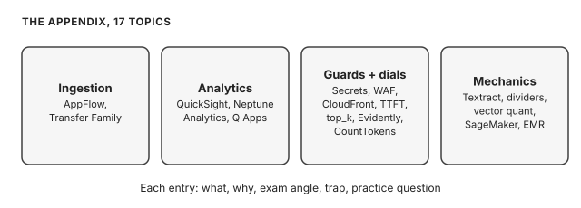
Exam blueprint and coverage proof
EXAM-BLUEPRINT.md
The research behind these volumes: verified exam facts vs assumptions, all five domains with every official task statement, "what AWS tests" / "how AWS asks this" / "common trap patterns" per topic, cross-cutting decision ladders, a 15-item master trap list, and sources consulted.
COVERAGE-MAP.md
Three-way completeness proof: every official exam-guide task statement mapped to volumes, every topic from the Maarek course study guide (sections I-X) mapped to volumes, and every course lab file mapped to a lab chapter. Nothing missed.
What actually helped (from candidates who passed)
Compiled Sept 2026 from ~5 detailed pass writeups (Medium, dev.to), r/AWSCertifications threads, the community awscertificationswiki, and KodeKloud's study guide. The exam is new (GA 2026), so the evidence pool is thin. Where a claim rests on one voice, it is marked.
- Hands-on lab time in a real AWS account (strongest signal, repeated by everyone). Every detailed writeup says the same thing: you cannot pass on videos alone. Build a Knowledge Base against real documents. Try all four chunking strategies (fixed, hierarchical, semantic, custom Lambda) against the same corpus and compare retrieval quality. Stand up OpenSearch Serverless AND Aurora pgvector to feel the latency/cost difference. Build a Bedrock Agent with action groups. Probe Guardrails with adversarial prompts.
- A breadth course for the mental model (Frank Kane + Stephane Maarek Udemy course is the most cited: 22 hours, one 75-question practice exam. Kane stays close to AWS source material, Maarek teaches the exam frame and how to read a 400-word scenario without losing the driving constraint). Then go deep on the AWS docs for the topics the exam weights most.
- Practice exams used as gap-finders, not graders. Every miss becomes a research target, then a lab session the same day. Aim for 85% on practice exams before booking (the pass bar is 750, not 700). Honest caveat: real questions were "different from any practice set," but the structure was identical: multi-paragraph scenario, four long plausible answers, three failing different constraints.
- Read the official exam guide first. Skill statements describe architecture problems, not definitions.
- The AI breakdown drill. Paste practice questions into an AI and ask "Why is this option wrong? What specific AWS limitation eliminates it?" This builds the internalized patterns you need under time pressure.
- Optional warm-up: AIF-C01 (AI Practitioner) first for exam-structure familiarity, but it does not reach professional depth, so treat it as a warm-up, not prep.
Top pitfalls candidates report
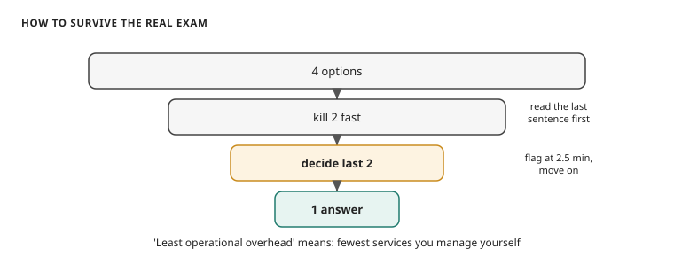
- Time pressure is the real enemy. Read for shape, read again for the constraint, eliminate two fast, decide between the last two. If undecided at ~2.5 minutes, flag and move. Do not count on review time.
- "Least operational overhead" is the most repeated phrase. Read it as "fewest services you manage yourself." Managed and serverless beats clusters and custom Lambda glue.
- Multi-response questions need coherent pairs. Each chosen option solves a different part of the problem; the pair must form a coherent design.
- Proactive vs reactive. If the requirement says "proactively," eliminate every option that only detects or reacts after failure.
- Fabricated features in wrong answers. Candidates found "S3 action nodes in Bedrock Flows," "Guardrails with token quota policies," "cross-region guardrail replication." If an option sounds slightly off, the feature may not exist.
- Know what services cannot do. Guardrails cannot enforce IAM access; Macie scans S3, not CloudWatch Logs; AppSync is synchronous. Negative facts eliminate wrong answers faster than positive facts select right ones.
- Express Step Functions: 5-minute max, no Wait for Callback. Human-approval pauses need Standard.
- CloudTrail vs CloudWatch for safety auditing. CloudTrail records who called which API; it does not capture what a guardrail blocked or why, that goes through CloudWatch custom metrics.
- Safety threads through all domains. A Domain 2 question can hinge on a guardrail behavior from Domain 3. Do not study domains in isolation.
- The center of gravity is Bedrock, not SageMaker. No confusion matrices, no feature engineering, no SageMaker training pipelines. SageMaker shows up via JumpStart, alternative hosting, and Clarify-style evaluation.
Practice resources, with honest assessments
- This guide's question bank + mock exam: your main bank. 200 questions plus a 75-question mock exam.
- Tutorials Dojo AIP-C01 practice exams: the traditional gold standard for AWS certs, but their AIP-C01 set is newer than their SAP sets and no candidate credited it with matching this exam's difficulty. Start with their free 30-question sampler.
- Maarek + Abhishek Singh standalone practice exams (100 questions, 2 progressively difficult tests), endorsed by one detailed writer as human-crafted with authentic trap patterns. Single-source endorsement.
- AWS Skill Builder official practice: useful for question-style familiarity; two Sept 2026 Reddit voices said it prepared them "for a completely different exam." Use for format, not as your main bank.
- Certingo YouTube walkthroughs + free demo (study.certingo.app/aip-c01), free scenario-style questions with category labels. Supplementary drill, quality unverified.
- MishreePatel/AIP-C01-GenAI-Study on GitHub: free public study log + 4-part YouTube series with slide decks across all five domains. Good companion, quality unverified.
- awscertificationswiki GenAI Developer Pro page: free community resource list, updated Apr 2026. Best single starting page.
Suggested study order: 2-week sprint (4+ hours/day)
| Block | What to do | Why |
|---|---|---|
| Days 1-3 | D1 volume + its questions | 31% of the exam; everything else builds on it |
| Days 4-6 | D2 volume + its questions | 26%; the "how it fits together" domain |
| Days 7-8 | D3 volume + its questions | 20%; heavy trap territory (Guardrails) |
| Day 9 | D4 + D5 volumes + questions | 23% combined; faster domains |
| Days 10-11 | System design guide | Locks in the scenario reasoning the exam tests |
| Days 12-14 | Question bank + 75-question mock exam, re-take weak domains | Readiness bar: 80%+ on the mock |
The trap pattern to carry through everything: scenario-based "choose the MOST correct answer" questions where two options are defensible and only one satisfies all constraints (cost, latency, compliance, scale). When stuck, prefer the managed Bedrock-native service over building it yourself, and re-read the constraint the scenario emphasized.
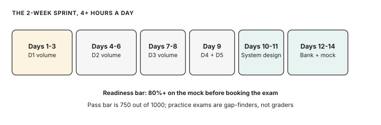
Alternative: 4-week lab-heavy plan (115-125 hours)
For candidates who can give 4+ hours a day over four weeks and want the lab-first path the passers recommend. Roughly 2 hours lab, 1.5 hours course/video, 30-60 minutes practice questions and docs per day. Set up a personal AWS account with billing alarms on day one.
Days 1-2: Foundation. Read the official exam guide end to end. Skim the Well-Architected GenAI Lens overview. Take one untimed practice set cold to find your baseline.
Week 1: D1, RAG core (31%). Run the hands-on set from "What actually helped" #1 above (Knowledge Base, all four chunking strategies, both vector stores, an agent with action groups, guardrail probing).
Then drill the decision the exam tests most: OpenSearch vs Aurora pgvector vs MemoryDB vs S3-with-metadata, driven by scale, latency, and operational overhead. Agents + Knowledge Bases + Guardrails is the "holy trinity", expect 8-10 questions touching some combination.
Week 2: D2, implementation and agents (26%). Build a Bedrock Agent with Action Groups backed by Lambda. Build a multi-step workflow with Prompt Flows (Bedrock's visual no-code workflow builder). Compare orchestration: Step Functions Standard vs Express (Express caps at 5 minutes, no Wait for Callback). Compare delivery: API Gateway response streaming vs WebSockets.
Practice the right-tool-for-data rule: Knowledge Bases for unstructured documents, text-to-SQL for RDS, never embed relational tables into a vector store.
Week 3: D3 safety and governance (20%) + D4 cost and performance (12%). Configure Guardrails end to end: content filters, denied topics, PII redaction, contextual grounding, detect-only vs block modes. Probe them with adversarial prompts. Study SCPs (org-level permission ceilings) vs IAM permissions boundaries (per-role limits) for multi-account Bedrock governance, KMS/TLS/PrivateLink.
For D4: on-demand vs provisioned throughput, prompt caching, smaller-model routing, CloudWatch Bedrock metrics, X-Ray tracing for agent workflows.
Week 4: D5 evaluation and troubleshooting (11%), then timed practice. Learn Bedrock model evaluation, LLM-as-judge patterns, retrieval precision/recall debugging, hallucination detection via grounding checks, the common failure list (context overflow, token limits, embedding mismatch, prompt injection bypass, throttling).
Then full-length exams under real time pressure, targeting the 85% booking bar.
ADHD-friendly structure: labs before videos (build first, then learn the name for what you built); one question card at a time with the "why is this option wrong" drill; 25-minute timers per scenario set.
End each day by writing the one decision rule you learned in your own words.
Notes on currency
Exam format facts and domain weights are from the official exam guide (see the verified table at the top of this page). Bedrock pricing figures and some service defaults are labeled illustrative throughout the volumes where volatile. The principles behind them are what the exam tests. If a number looks stale, check the AWS docs for the current value, but answer exam questions with the principle.
Built Sept 28, 2026. All files are self-contained HTML with embedded diagrams; no internet connection needed to study. Generic learning content only.
Where to go next. Rusty on AWS or AI basics? Start with the three prerequisite volumes above. Otherwise read the D1 volume first: it is 31% of the exam and sets the vocabulary every other volume builds on. For the final sprint, the crash course distills all five domains to decision rules and numbers, and the question bank ends with the 75-question mock exam.